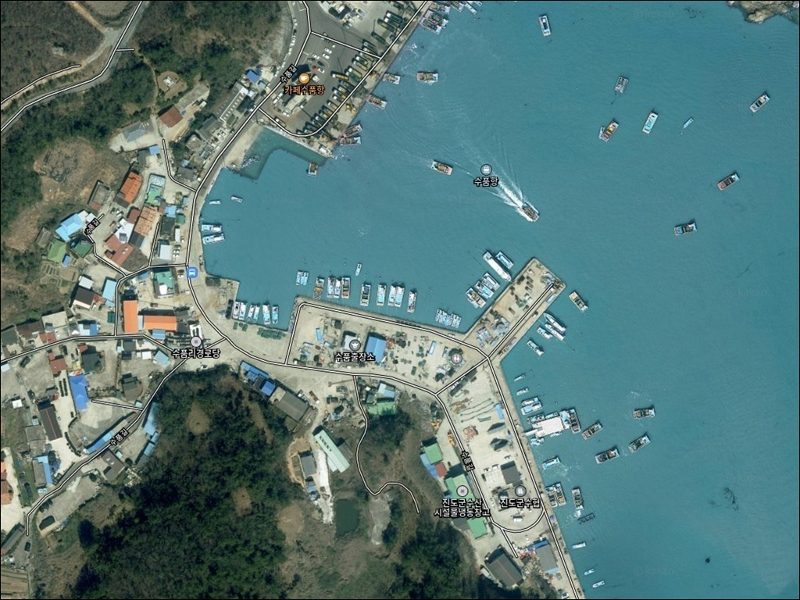
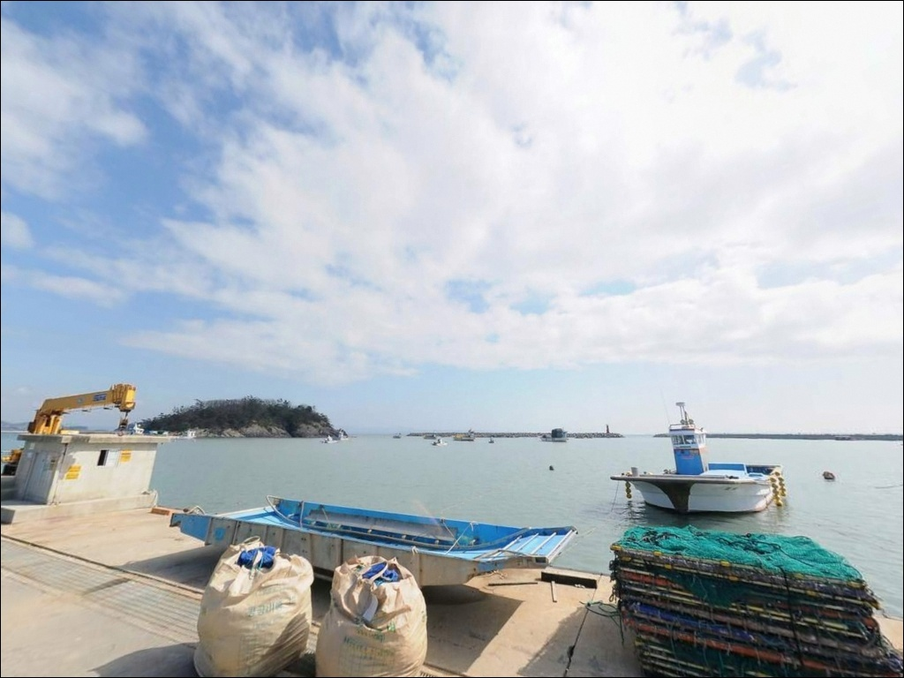
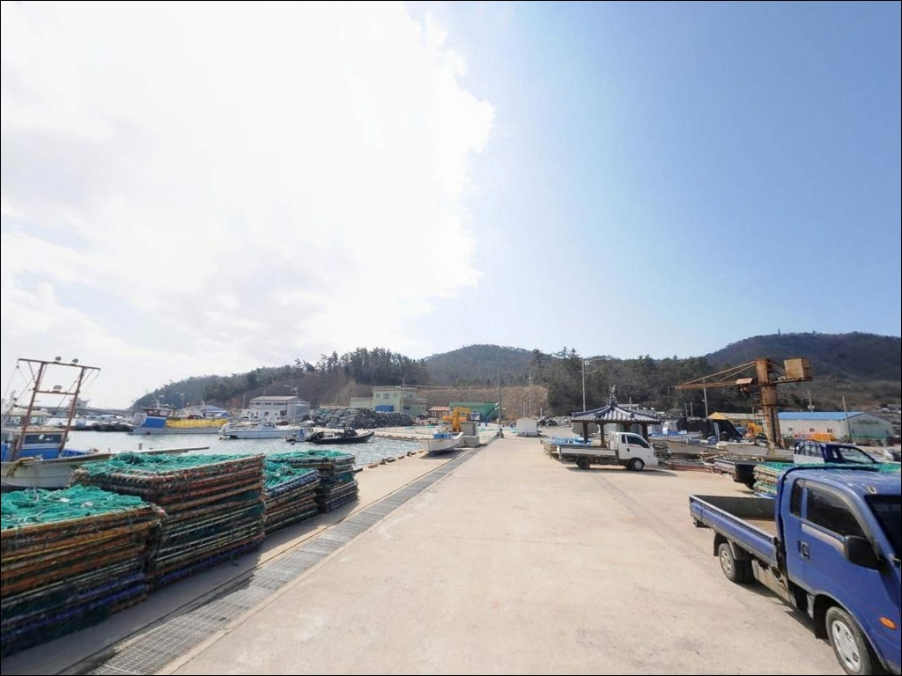
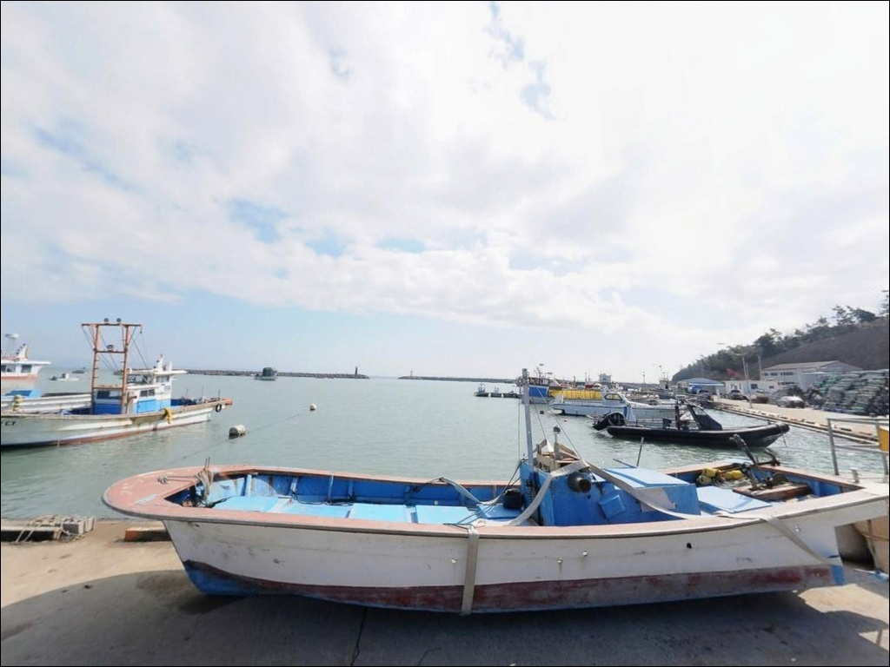
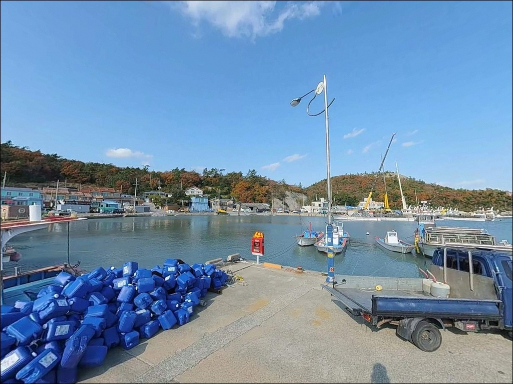
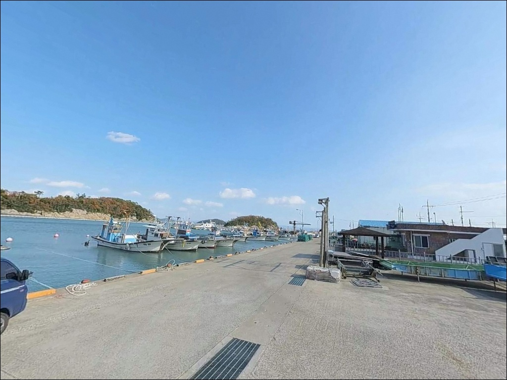
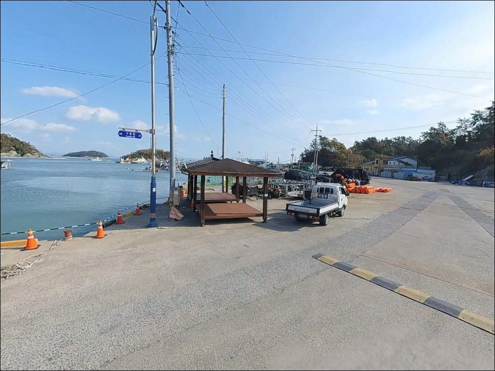
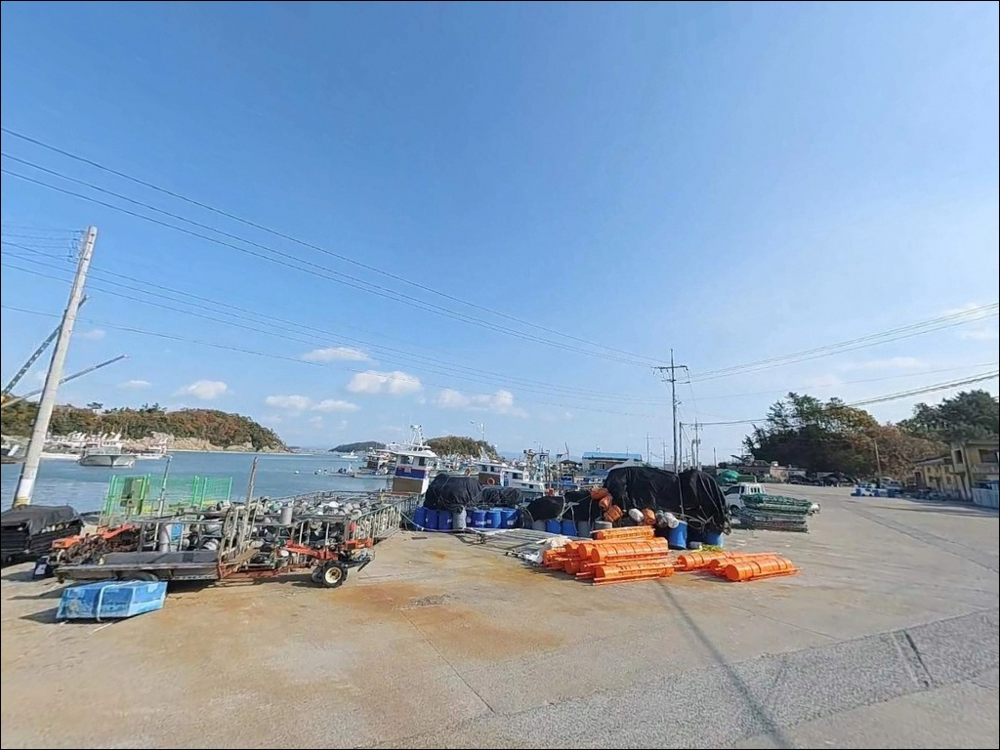
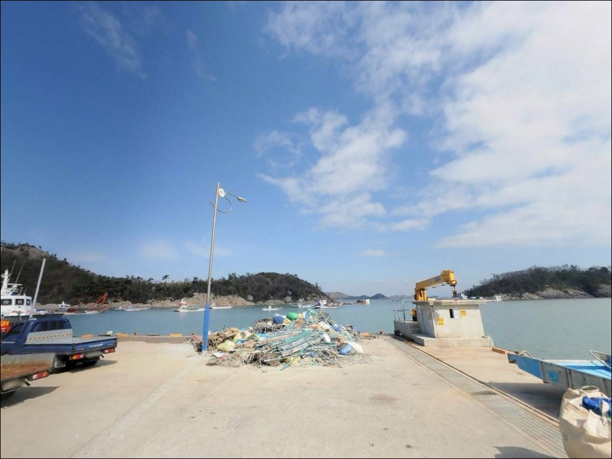

이 페이지에는 광고(제휴 링크 포함)가 있으며, 광고 링크를 통해 구매하면 운영자가 판매 수익 또는 수수료를 받을 수 있습니다. 포인트 사진: 카카오맵 스카이뷰·로드뷰. 이 페이지의 지도·사진 이미지는 카카오맵의 실제 서비스 이미지와 다를 수 있습니다.

수품항
전남 진도군 의신면 금갑리 665-15
해양낚시공원 데크가 설치된 수품항은
접근하기 편한 방파제 포인트처럼 보이지만,
썰물 타이밍에 방문하면 수위가 빠져
공원 구간의 낚시 효율이 크게 떨어집니다.
방파제 끝단과 테트라포드 주변을 중심으로
물때에 맞춰 자리를 선정하는 것이
이 포인트의 기본 판단 기준입니다.
진도 남단 접도에 자리한 수품항은
1991년 국가어항으로 지정된 방파제 포인트입니다.
항내가 북측으로 깊게 만입되고
동쪽을 접도 본섬이 가로막는 구조여서,
서망항 방면 기상이 나빠지는 날에도
낚시 여건이 유지되는 경우가 많습니다.
이 글은 수품항의 방파제 낚시 여건과
물때 판단 기준, 차박 체류 조건에 집중합니다.
조황 단정이나 특정 어종 보장은
이 글의 범위에 포함되지 않습니다.

접도는 진도 본섬과 연도교로 이어져 있어
차량 진입 자체에 어려움은 없습니다.
국가어항으로 정비된 항구답게
수품항까지 이어지는 도로는 포장 상태가 유지되어 있으며,
승용차부터 캠핑카 수준까지 진입이 가능한 구조입니다.
연도교를 건넌 뒤 섬 동측 해안을 따라 내려가면
수품항에 도달하는 동선이며,
물양장 전면 도로, 해양낚시공원 입구 인근 공터,
항 입구 도로변 갓길 등에
단기 주차 가능한 공간이 형성되어 있습니다.
회차는 항 내부 구조 안에서 처리할 수 있는 수준입니다.
어선 하역과 입출항이 이루어지는 항구이므로
물양장 작업 구역과 선박 이동 동선을 막지 않는
외곽 자리를 우선하는 것이 기본 매너입니다.
장시간 주차가 필요하다면
어업 작업이 집중되는 새벽 시간대를 피하는 것이
어민과의 마찰을 줄이는 방법입니다.

수품항은 어업 활동이 활발한 국가어항으로,
새벽 시간대 어선 입출항 소음과 작업 불빛이
동반되는 환경입니다.
해양낚시공원 구간에는 가로등·난간 조명·CCTV가
설치되어 있어 완전한 노지 분위기는 아니며,
늦게 도착해 이른 시간에 이동하는 스텔스형이
이 항구의 성격에 맞는 차박 방식입니다.
접도 전체 인구는 100명 미만 수준의 소규모 어촌 섬이라
민가 밀집도는 낮은 편이지만,
항구 주변은 어업 시설과 주택이 혼재된 공간입니다.
차량은 항 입구 공터에 두고 낚시는 도보로 이동하는 형태가
어민 동선과의 충돌을 줄이는 가장 무난한 방식이며,
항내에서의 취사와 화기 사용은 삼가는 편이 좋습니다.

수품항 인근에는 바다뷰 카페인
카페 수품항(전남 진도군 의신면 수품길 35)이 영업 중이며,
낚시 전후 간단한 식음료를 해결하기에 적합한 공간입니다.
영업시간은 오전 10시부터 오후 9시까지로 소개되며,
방문 전 영업 여부를 확인하고 가는 편이 좋습니다.
편의점·마트·주유소 등 생활형 인프라는
진도읍 방면으로 차량 이동이 필요한 거리에 있습니다.
소규모 어촌 섬 특성상 연료·식수·낚시 소품은
출발 전 진도읍 또는 의신면 소재지에서 사전에 보충하고
진입하는 것이 현실적입니다.
응급 상황 발생 시에도 진도읍 방면으로 이동해야 하므로
비상약품과 비상 연락처는 미리 갖추는 것이 기본입니다.

수품항 방문 전 가장 먼저 확인할 것은 물때입니다.
바다타임에서 진도수품 기준 물때표를 확인하고,
만조 전후를 노려 입장 시각을 맞추는 것이 기본 전략입니다.
썰물 타이밍에 도착하면 공원 데크 구간이 막히고
방파제 끝단으로 자리를 다시 찾아야 하는 상황이 생깁니다.
방파제 외항 테트라포드 구간은 표면이 미끄러운 편이라
접지력이 있는 신발을 착용하고 진입하는 것이 기본입니다.
바닥이 암반과 펄이 섞인 구조여서 밑걸림이 잦으므로
여분 채비는 넉넉하게 준비하는 편이 좋습니다.
수품항 입구 주변 해역에는 얕은 암반과 양식장 시설이
분포하고 있어 캐스팅 방향을 미리 파악해두는 것이
채비 손실을 줄이는 방법입니다.
기상청 해상예보에서 서해 남부 해상 예보를 확인하고,
당일 풍속과 파고가 허용 범위 내인지 먼저 판단한 뒤
출발 여부를 결정하는 것이 순서입니다.
야간 낚시 시 헤드랜턴과 구명조끼는 반드시 챙겨야 합니다.

수품항의 핵심 구조는 항내가 북측으로 깊게 만입되고
동측이 접도 본섬으로 가려진 형태입니다.
이 구조가 서·북서 계절풍의 직접 영향을 줄이면서
진도 외해 기상이 나쁜 날에도 낚시 자리가 유지되는
이유입니다.
수품항은 항내가 북측으로 깊게 만입되고 동쪽이 접도 본섬으로 가려진 구조여서,
서망항이 여의치 않은 날에도 낚시 여건이 유지되는 경우가 많습니다.
흰등대 방파제는 도보 진입이 가능하며
외항 쪽으로 테트라포드가 형성되어 있습니다.
방파제 주변 수심은 평균 5~6m 내외이며,
만입구 방향으로는 8~9m까지 깊어지는 구간이 있습니다.
조류는 내만 구조 특성상 비교적 완만하게 형성되어
릴찌낚시와 원투낚시를 모두 운용할 수 있는 환경입니다.
바닥은 암반과 펄이 섞인 구조이며,
방파제 끝단과 꺾이는 구간이 조류 변화와 수심 변화가
겹치는 핵심 자리입니다.
해양낚시공원 구간은 데크·난간·조명이 설치되어 있어
접근성이 좋지만, 썰물 타이밍에는 수위가 크게 빠지므로
순수 낚시 목적이라면 방파제 끝단과 외항 주변을 주력으로 삼는 것이 유효합니다.
최신 조황은 출조 전 검색해 보시기 바랍니다.

이 포인트에서 가장 잘 맞는 낚시는
감성돔 릴찌낚시입니다.
방파제 외항 테트라포드 주변과 끝단 구간은
조류 흐름이 일정하게 형성되어
찌 채비를 흘리기에 유리한 구조입니다.
봄(4~6월)과 가을(9~12월)이 시즌 폭이 넓으며,
만조 전후 물때를 맞추면 자리가 살아나는 포인트입니다.
원투낚시도 이 포인트 구조에 잘 맞는 스타일입니다.
내만 특성상 바닥이 펄과 암반이 섞인 구조여서
붕장어·도다리 계열 바닥 어종을 기대해볼 수 있으며,
정조 타이밍에 채비를 끝단 방향으로 멀리 보내
바닥을 천천히 탐색하는 방식이 이 포인트에 어울립니다.
루어낚시는 방파제 외항 라인과
조류 소통이 좋은 구간에서 시도해볼 만합니다.
야간에는 농어와 갈치 반응이 살아나는 조건이 있어
소형 미노우나 바이브레이션으로
방파제 그림자 라인 주변을 탐색하는 방식이 맞습니다.
가을철에는 갑오징어·무늬오징어 에깅도
테트라포드 주변 구조물이 발달한 구간에서 시도해볼 수 있습니다.

수품항 여건이 기대에 못 미칠 때
가장 먼저 고려할 대안은 서망항입니다.
진도 낚싯배 출항의 중심지로 전국적으로 알려진 방파제이며,
감성돔·우럭·부시리 등 어종 폭이 넓고
수품항보다 외해에 열려 있어 조류 변화가 큰 구간입니다.
방파제 도보 낚시뿐 아니라 배낚시 출조도 가능하므로
당일 여건에 따라 유연하게 계획을 바꿀 수 있는 거점입니다.
이동 거리를 줄이고 싶다면
초평항 방파제(수품항에서 약 3.8km)와
현목항 북측 방파제(약 4.4km)가 대안이 됩니다.
두 포인트 모두 진도 남동부 해안선을 따라 분포한 소형 방파제로,
바람 방향이나 파도 상황에 따라 수품항보다
유리한 여건이 형성되는 경우가 있습니다.
차박 자리가 마땅치 않을 때는
가계해수욕장 주차장이
편의시설 접근성과 주차 여건 면에서 대안이 됩니다.
진도 전역을 이동하며 낚시를 병행할 거점으로
활용하기에도 접근성이 좋은 위치입니다.

감성돔 릴찌낚시를 주력으로 삼는 낚시인이라면
수품항의 방파제 구조는 잘 맞는 지형입니다.
방파제 끝단과 외항 테트라포드 주변에
조류 흐름이 형성되고, 내만 구조 덕분에
진도 외해 기상이 나쁜 날에도 낚시 자리가 살아 있습니다.
반면 물때 계산 없이 썰물에 도착하거나,
해양낚시공원 데크만 기대하고 진입하면
좋은 자리를 찾기 어려운 상황을 맞닥뜨릴 수 있습니다.
해양낚시공원 구간은 썰물 타이밍에 수위가 크게 빠지므로,
순수 낚시 목적이라면 방파제 끝단과 테트라포드 주변을
주력 자리로 삼는 것이 유효합니다.
접도 어촌 마을의 조용한 분위기를 좋아하는 낚시꾼이라면
수품항에서 차박과 낚시를 하룻밤 함께 즐기기에
나쁘지 않은 선택지입니다.
물때 확인과 자급 준비, 어업 구역 배려를 갖추고 간다면
진도 남부 해역 탐색의 조용한 거점이 될 수 있는 포인트입니다.